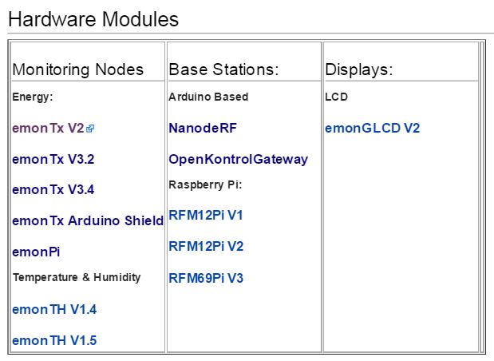

Hi, im new here, i want to take on this project, i have been looking at the building blocks page, however i have doubts, which version of the energy monitor should i start with? which has the most documentation and the most support in the website and community?
I have been browsing all over the place and its a bit overwhelming the number of revisions and information about the hardware boards that had been implemented, I want to measure my home power along its power factor, with an energy monitor so i can transfer it wirelessly directly to my router and upload the data to an SQL server database where i will graph the values, and where i will do some web programming to show the value in dollars instead of power
i would like to do the hardware part using the atmega328, (arduino based) however i still have doubts about which should i start tearing up apart (i order to understand every little detail of the current boards)
I leave the list that can be found in http://wiki.openenergymonitor.org/index.php/Main_Page with the hope of anyone having a friendly approach of which could be the simplest of the boards that can make everything what i want to do in the short run , for the mean time i will keep trying to figure out which one can accomplish all of this on my own by reading everything i can from each version

Re: Getting started (Help picking up a version of the project)
The set-up we currently recommend:
EmonTx V3.4, with current and voltage sensors
Raspberry Pi with RFM12Pi (fitted with RFM69CW radio)
EmonHub firmware
You can fit a WiFi dongle to the Pi to transmit wirelessly, or you can use Ethernet cable to connect direct to your router.
You could also look at adding a hard disk to your Pi and run the database on that.
Re: Getting started (Help picking up a version of the project)
Given that Robert, could someone make that clear on the building ng blocks page as well as any other intro pages.
It would also be helpful to everyone not only new users to have links to the instructions on how to install the software, I've been following the forum for a long time and would still have to apply a lot of insight to work out where to find the correct instructions for updating my pi with emonhub working from a hard disk.
Re: Getting started (Help picking up a version of the project)
Far be it from me to criticize the guys at OEM... what you have done/are doing is nothing short of superb. The hardware that is available and the clear dedication to developing the system is commendable. But as a newcomer to OEM, to Arduino and to Raspberry Pi, the only area I feel needs work is the documentation for absolute beginners. Yes, the info is all there if you know what to look for but it is a bitty and needs many searches and hunting around to find out what to do.
I would like to see a Beginners Guide to Open Energy Monitor - How to Get Started from both the turn-key system point of view and also the kit perspective. Perhaps I am being a bit harsh in making this observation because what is there is pretty good... it just needs pulling together in a single place for the beginner... like me! Is there one and I have just missed it?
I have 30+ years experience as a software developer and even I am struggling to know what to do and to see how it all hangs together technically. OK, most people may not need to know the kind of stuff I am looking at but even so, I find the whole thing quite confusing at times... or am I just being a bit think?
Perhaps you might recommend what the best route a beginner might take to find out what to buy and how to set it up once bought. Particularly for buyers of the emonTX Shield kit and the RMF69Pi. I know the info is there but it really needs a,b,c... step-by-step guide.
Re: Getting started (Help picking up a version of the project)
Where does this fall down? (Not that I wrote that page!)
Re: Getting started (Help picking up a version of the project)
That is good for a general overview but it is the step by step detail of how to set everything up that I can't find.
Re: Getting started (Help picking up a version of the project)
Step-by-step? For what - and how small do you want the steps?
[I'm not trying to be funny, my problem is I know my way around here, and I haven't yet got a handle on exactly where your problem is. If you can help me to identify it a little more precisely, I might be able to plug the gap(s).]
Re: Getting started (Help picking up a version of the project)
It is good of you to offer to help but I am not after specific help on any particular issue. My point is that there are no comprehensive instructions for the beginner and whilst it is great that you and other helpful people here are willing to offer help it still means people have to first get stuck then ask. Detailed instructions would mean they can get up and running more quickly and with potentially less distress.
Re: Getting started (Help picking up a version of the project)
"I am not after specific help on any particular issue."
I'm an electrical engineer by profession, and when I first got involved here I found I was repeatedly answering the same questions. Over time, I've written pages (mostly in Building Blocks) that explain those problem areas, and I must have succeeded because those particular questions have largely subsided.
But I've got to say it again: I'm struggling to identify what it is that you needed to know. What is it that is obvious (now, with the benefit of experience) to me and not so obvious to you? What is it that you were trying to set up? Bear in mind the number of products in the shop and the number of possible permutations - and that excludes third-party input like meters, Arduinos and servers hosted by ISPs - and you'll quickly understand why one size won't fit all.
Re: Getting started (Help picking up a version of the project)
I shall review the docs again then. Perhaps I have wandered around the various docs so many times now that I have confused myself! I shall try again from scratch and see how I get on.
Thanks for your offer to help tho :)
I am about to set up a emonBase using the RFM69Pi and an emonTX using the emonTX Shield so I shall see how I get on before I say anymore.
Thx again. If I get stuck I shall shout!